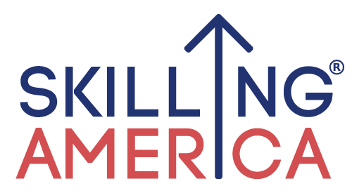

Skilling America
Measuring what matters — workforce equity analytics for the Skilling America initiative
Story Behind the Project
From day one as a new grad at Autodesk, I volunteered for pro bono consulting projects through the Autodesk Foundation — contributing ML and data expertise to nonprofits and startups working on social impact. This engagement, in the summer and fall of 2019, matched me with Hope Street Group, a nonprofit that connects employers, educators, governments, and institutions to create economic opportunity and workforce training.
The specific challenge was around their Skilling America platform — an online learning platform that trains individuals for roles as career coaches and case managers at one-stop career centers, helping build a more resilient workforce system. Hope Street Group knew the platform was creating impact, but they didn't yet have the right data infrastructure or metrics to measure and communicate that impact effectively. That's where our team came in.
About
A pro bono data science engagement through the Autodesk Foundation's consulting program, focused on helping Hope Street Group streamline their data collection practices and establish the right metrics to measure the impact of the Skilling America platform. The project spanned impact metric identification, data collection and analysis methodology, data privacy review, and stakeholder communication of insights.
My Role
I served as the data scientist on a three-person Autodesk pro bono consulting team, alongside Julie Sylvain (Chief of Staff, Entertainment Creation Products) and Volha Samasiuk (Privacy Counsel). I contributed ML and data expertise across all four phases of the engagement: identifying potential impact metrics, reviewing data collection and analysis methods and tools, advising on data privacy best practices, and helping communicate data insights to Hope Street Group stakeholders.
Key Details
- Identified and defined impact metrics to measure the effectiveness of the Skilling America platform
- Reviewed and recommended improvements to data collection practices and analysis tooling
- Ensured data privacy compliance across measurement and analysis approaches
- Translated findings into actionable insights for Hope Street Group program staff and stakeholders
Impact
Hope Street Group came away with a clearer framework for measuring program success — guidance on what data to collect, how to analyze it, and how to communicate it in a privacy-compliant way. The engagement helped a workforce equity nonprofit better understand and demonstrate the value of the Skilling America platform for the communities it serves.